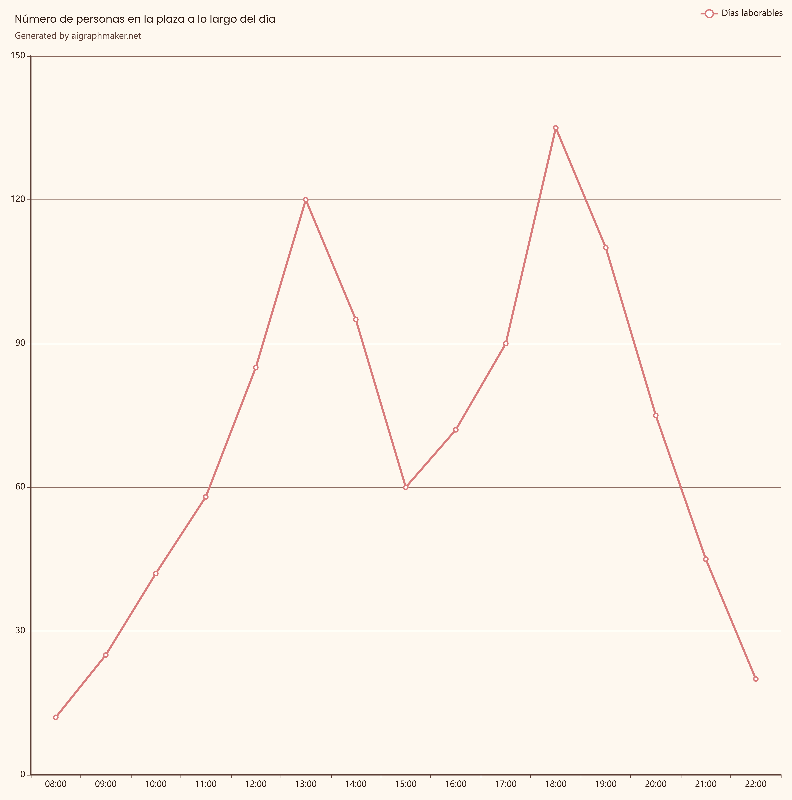

Actividad 6
La siguiente función representa el flujo de tráfico en una ciudad con el paso de las horas.
y=-x2+4x
Donde x representa el tiempo y la y representa la cantidad de vehículos que circulan por la vía en ese momento.
Tareas:
- Tabla de valores
- Representación gráfica, indicando intervalos de crecimiento y decrecimiento, así como los puntos de corte con los ejes.
Actividad 7
Esta gráfica representa el número de personas en el Metro al cabo de las horas.

Indica:
- Tramos de crecimiento
- Tramos de decrecimiento
- ¿Dónde alcanza el máximo absoluto? ¿y el mínimo?
- ¿Es una función continua?